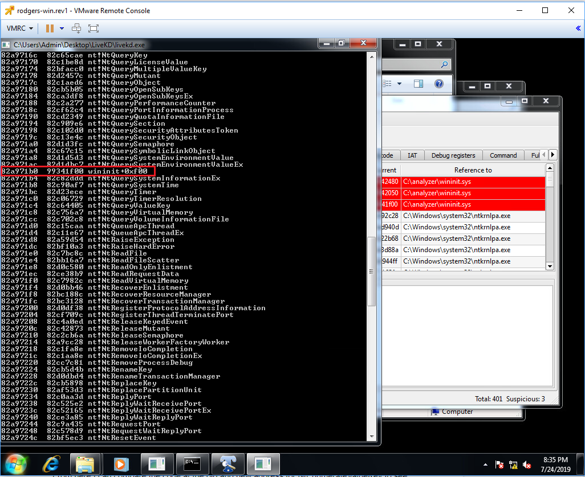

CS373 Weekly Write-Up 5
This week the lectures began with a refresher on what we have gone through in the class so far and then focused on helping us understand the concept of stealth by means of memory manipulation.
Stealth by means of memory manipulation is done primarily through rootkits, which are malware that actively conceals its existence and actions from users and system processes. A rootkit is able to do this by operating at the kernel level (.sys files) instead of at the user level (.exe and .dll), giving it essentially complete control. Rootkits are extremely difficult to deal with once they are in, so defence against them is mostly about stopping the rootkit from infiltrating the system. This is because they operate at the same level (or lower) than anti-virus software, are once they are in place they have all the permissions and control needed to hide or even find and kill AV processes.
Rootkits have a powerful tool in their arsenal called API hooking, which is where the malware access the system service description table and edits the memory pointers to point to the malicious code that the attacker wants to run, the bad code is then run in the place of whatever was at the original pointer, and then the malware jumps back the the original API call location so that no red flags get raised.
The primary lab is titled “Agony”, and offers us a look into how rootkits work.
Agony Lab:
The lab begins with running analizer.py, which we get familiar with in the previous week, on the now renamed “bad” malware file (Agony).

I can then run the command “dir *.sys” to bring up normally hidden system files, which shows us the new file “wininit.sys”. This comes up now where it wouldn't with the command “dir *.*” due to differences in the API’s being called.

Using the tool Tuluka we can clearly see that the rootkit is hooking in its new code, changing pointers, and filtering on the name “wininit.sys”

I can then take a look using LiveKD, which is a tool that can read Windows kernel memory and display it on the shell.

From here I can compare the code at the old and new address for NtEnumerateValueKey to see that it now points to the code in “wininit.sys”. Fortunately LiveKD has a quick tool to correct the pointers which un-hides “wininit.sys”. The last important command from the lab is “dps nt!kiServiceTable L191” which gives a list of all API’s running. This is another way to spot the address change with the new bad file.

We then explored the use of the tool Process Hacker, getting basic familiarity with its functions. Process Hacker lets us walk through the memory for running processes. From here we went on to further analyze the Agony sample.
Further analysis:
Using the kernel and windbg we can set the breakpoints and step through the instructions one at a time.

By stepping through the instructions one by one we can find the offset for each instruction:
NtEnumerateValueKey = 84 bytes
NtQueryDirectoryFile = 54 bytes
NtQuerySystemInformation = 26 bytes
From there we can finally remap the original pointers so there are no more suspicious values.